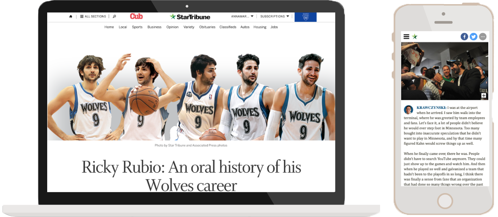

Digital
Design of an override template for sports writer Mark Craig's weekly Super Bowl predictions. This template is used every week leading up to the Superbowl in Minneapolis, so it was important to include navigation so readers could easily make their way through the picks and see how they changed throughout the season.
Skills used: HTML, CSS, Jquery, Photoshop, photo illustration
All the outdoors booths you could want to visit at the Minnesota State Fair on a crazy, colorful, detailed illustrated map by Kevin Cannon. For mobile, it was important to me that readers using it could easily map themselves to each booth.
HTML, CSS, Jquery

Design of an override template for an oral history of Ricky Rubio's career with the Timberwolves. This was my first piece for the Star Tribune and helped me get aquainted with the sports around here very quickly.
HTML, CSS, Jquery, Photoshop, photo illustration
Illustration and design for a quiz by the Outdoors section of the Star Tribune about Minnesota bike laws.
HTML, CSS, Jquery, Photoshop, photo illustration
Developed and designed this website for the release of "The Life of Pablo" by Kanye West while I was the pop culture editor for my college newspaper. I also edited the section, recruited writers and got a direct url so idsnews.com/kanye exsists (which I consider my biggest accomplishment).
HTML, CSS, Jquery, Photoshop, Illustrator, animations, AP Style, copy editing
The most important story I have been able to be a part of is this, a profile of a family forced to flee Syria who now live in Indiana. Writer Alden Woods, photographer Ike Hajinazarian and I reported this over the course of a semester, during which then-Governor and current Vice President Pence said he would not allow Syrian refugees in the country. This story won story of the year by the Associated Collegiate Press.
HTML, CSS, Jquery, Photoshop, Illustrator, animations, AP Style, copy editing
Print

page design, headline writing
page design, headline writing

page design, headline writing, graphics

page design, headline writing

page design, headline writing, graphics

illustrations, page design, headline/copy writing

page design

art direction, page design, graphics

art direction, headline writing, graphics, page design

illustration, page design

page design

page design, headline writing

art direction, headline/copy writing, page design

illustration, page design

art direction, page design

page design